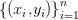
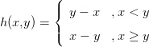
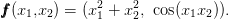
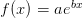
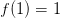
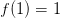
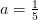
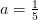
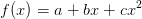
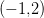

Capítulo 6
Aproximação de funções
O problema geral de interpolação pode ser definido como:
Seja  um conjunto de pares ordenados tais que 
se  , encontre uma função
, encontre uma função  (uma família de funções) tal
que
(uma família de funções) tal
que
Exemplo 6.0.2. Encontrar uma função  da forma  onde  e
e
 são constantes tal que  e
são constantes tal que  e  . Este problema equivale a
resolver o seguinte sistema de equações:
. Este problema equivale a
resolver o seguinte sistema de equações:

 .
Substituindo este valor em qualquer das equações, temos . Assim
.
Substituindo este valor em qualquer das equações, temos . Assim

Exemplo 6.0.3. Encontrar a função polinomial do tipo 
que passe pelos pontos ,  ,
,  . Observamos que podemos
encontrar os coeficientes
. Observamos que podemos
encontrar os coeficientes  ,
,  e
e  através do seguinte sistema linear:
através do seguinte sistema linear:
 , e . Portanto
, e . Portanto

6.1 Interpolação polinomial
6.2 Diferenças divididas de Newton
6.3 Polinômios de Lagrange
6.4 Aproximação de funções reais por polinômios interpoladores
6.5 Ajuste de curvas
6.5.1 O problema linear
6.5.2 Ajuste polinomial
6.5.3 Ajuste linear de curvas
6.6 Aproximando problemas não lineares por problemas lineares
6.7 Interpolação linear segmentada
6.8 Interpolação cúbica segmentada - spline
6.8.1 Spline natural
6.8.2 Spline fixado
6.8.3 Resumo sobre Splines
6.2 Diferenças divididas de Newton
6.3 Polinômios de Lagrange
6.4 Aproximação de funções reais por polinômios interpoladores
6.5 Ajuste de curvas
6.5.1 O problema linear
6.5.2 Ajuste polinomial
6.5.3 Ajuste linear de curvas
6.6 Aproximando problemas não lineares por problemas lineares
6.7 Interpolação linear segmentada
6.8 Interpolação cúbica segmentada - spline
6.8.1 Spline natural
6.8.2 Spline fixado
6.8.3 Resumo sobre Splines